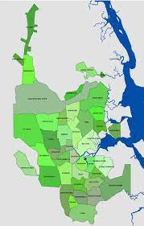

Pontos de Coletas em Joinville-SC
ONDE DESCARTAR:
Av. Firmino da Silva, 136 - Parque Guarani, Joinville - SC, 89209-224
Rod. Mun. Paranaguamirim, 268 - Paranaguamirim, Joinville - SC, 89234-100
R. Nara Leão, 20 - Ulysses Guimarães, Joinville - SC, 89230-646
R. Olavo Bilac, 680 - Pirabeiraba, Joinville - SC, 89239-100
Av. Júpiter, 1618 - Jardim Paraíso, Joinville - SC, 89226-600
R. Jiliard Higor de Mira, 57 - Itinga, Araquari - SC, 89245-000
R. das Cegonhas, 1078 - Jardim Iririú, Joinville - SC, 89224-151
R. Otto Pfuetzenreuter, 59 - Costa e SilvaJoinville - SC, 89219-200
R. Pref. Baltazar Buschle, 705 - Comasa, Joinville - SC, 89228-000
